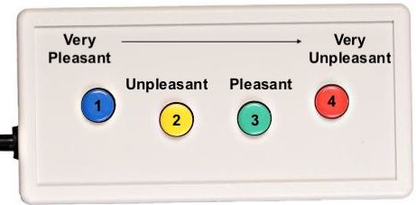

<!DOCTYPE html>
<html>
  <head>
    <title>ABCS Study: Implicit FAD</title>
    <script src="https://unpkg.com/jspsych@7.1.2"></script>
    <script src="https://unpkg.com/@jspsych/plugin-html-keyboard-response@1.1.0"></script>
    <script src="https://unpkg.com/@jspsych/plugin-image-keyboard-response@1.1.0"></script>
    <script src="https://unpkg.com/@jspsych/plugin-preload@1.1.0"></script>
    <link href="https://unpkg.com/jspsych@7.1.2/css/jspsych.css" rel="stylesheet" type="text/css" />
  </head>
  <body></body>
  <script>

    /* initialize jsPsych */
    var jsPsych = initJsPsych();

    /* create timeline */
    var timeline = [];

    /* preload images */
    var preload = {
      type: jsPsychPreload,
      images: ['img/key.png','socialthreat/1019.jpg', 'socialthreat/1033.jpg', 'socialthreat/1051.jpg', 'socialthreat/1090.jpg', 'socialthreat/1110.jpg', 'socialthreat/1111.jpg', 'socialthreat/1113.jpg', 'socialthreat/2579.jpg', 'socialthreat/2900.jpg', 'socialthreat/5711.jpg', 'socialthreat/5720.jpg', 'socialthreat/7001.jpg', 'socialthreat/7004.jpg', 'socialthreat/7080.jpg', 'socialthreat/7090.jpg', 'socialthreat/9041.jpg']
    };
    timeline.push(preload);

    /* define welcome message trial */
    var welcome = {
      type: jsPsychHtmlKeyboardResponse,
      stimulus: "Welcome to the Social Threat Task. Press any key to begin."
    };
    timeline.push(welcome);

    /* define instructions trial */
    var instructions = {
      type: jsPsychHtmlKeyboardResponse,
      stimulus: `
        <p>In this task, an image will appear on the screen.</p><p>If the image is <strong>very unpleasant</strong>, 
        press the number 1 on the keyboard as fast as you can.</p>
        <p>If the image is <strong>unpleasant</strong>, press the number 2 
        on the keyboard as fast as you can.</p></p>
        <p>If the image is <strong>pleasant</strong>, press the number 8 
        on the keyboard as fast as you can.</p></p>
        <p>If the image is <strong>very pleasant</strong>, press the number 9 on the keyboard as fast as you can.</p>
       <p> </div>
        </p>
        <p>Press any key to begin.</p>
      `,
      post_trial_gap: 2000
    };
    timeline.push(instructions);

    /* define test trial stimuli array */
    var test_stimuli = [
        {stimulus: 'sdvp/3068.jpg'},
        {stimulus: 'sdvp/6570.jpg'},
        {stimulus:'sdvp/SDVPS_1.jpg'},
        {stimulus:'sdvp/SDVPS_2.jpg'},
        {stimulus:'sdvp/SDVPS_3.jpg'},
        {stimulus:'sdvp/SDVPS_4.jpg'},
        {stimulus:'sdvp/SDVPS_5.jpg'},
        {stimulus:'sdvp/SDVPS_6.jpg'},
    ];
    var fixation = {
  type: jsPsychHtmlKeyboardResponse,
  stimulus: '<div style="font-size:60px;">+</div>',
  choices: "NO_KEYS",
  trial_duration: 1000,
  data: {
    task: 'fixation'
  }
};
var test = {
  type: jsPsychImageKeyboardResponse,
  stimulus: jsPsych.timelineVariable('stimulus'),
  choices: ['1', '2', '8', '9'],
 prompt: "<p>How would you rate this image? </p><p>Press '1' for very unpleasant, '2' for unpleasant, '8' for pleasant, or '9' for very pleasant. </p>",
 data: {
    task: 'response'},
    on_finish: function(data){
    data.response;GooG
  }
};
    var test_procedure = {
      timeline: [fixation,test],
      timeline_variables: test_stimuli,
      repetitions: 2,
      randomize_order: true
    };
    timeline.push(test_procedure);
    
var debrief_block = {
  type: jsPsychHtmlKeyboardResponse,
  stimulus: function() {

    var trials = jsPsych.data.get().filter({task: 'response'});
    var rt = Math.round(trials.select('rt').mean());

    return `<p>Your average response time was ${rt}ms.</p>
      <p>Press any key to complete the experiment. Thank you for your time!</p>`;

  }
};
timeline.push(debrief_block);
    /* start the experiment */
    jsPsych.run(timeline);

  </script>
</html>